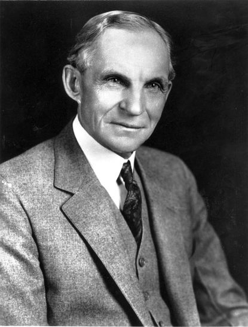

Your Page Title
Henry Ford

Portrait of Henry Ford
- In 1903 henry ford established Ford Motor Company
- In 1908 he produced his first vehicle the model T
- Introduced new ideas of mass production methods
- By 1913 was the world’s first moving assembly line for car’s
- Henry Ford Found apprentice work at 16 as a machinist
- He married Clara Bryant in 1888 who grew up on a nearby farm
- In 1914,ford increased the daily wage for an 8 hour shift for his workers to 5$(from $2.34)
- By 1918 almost all cars in america were model T’s
- Ceased production of Model T’s and replaced it with Model A’s
- Model A was a disappointment and was later passed by Chevrolet and plymouth
Additonal Information
Thinking is the hardest work there is, which is proably the reason so few engage.
Quote by Henry Ford